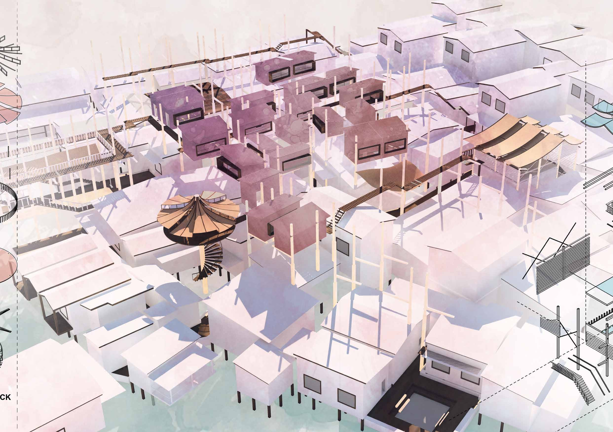
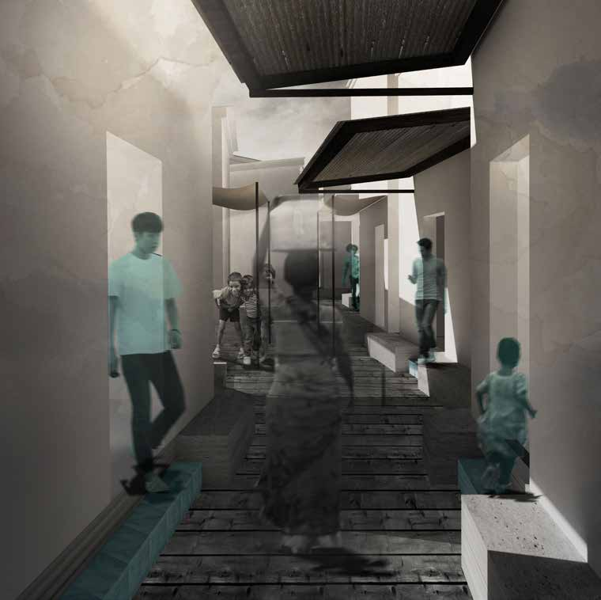
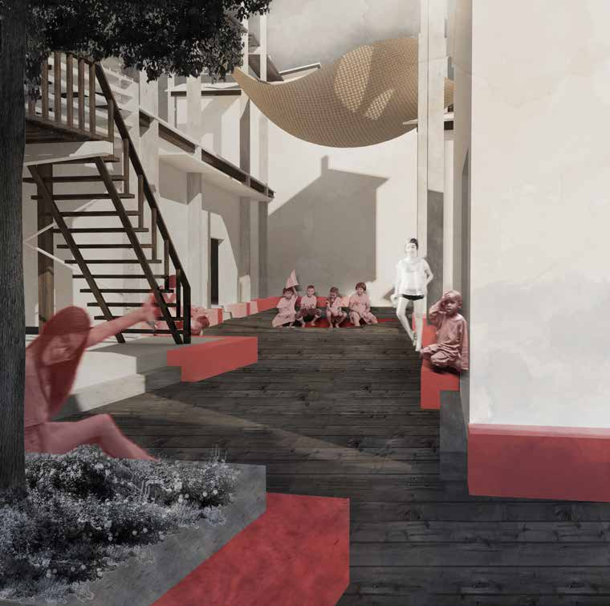
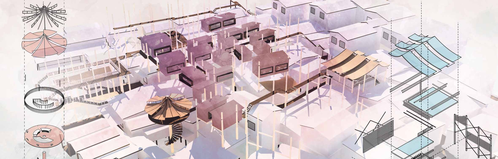
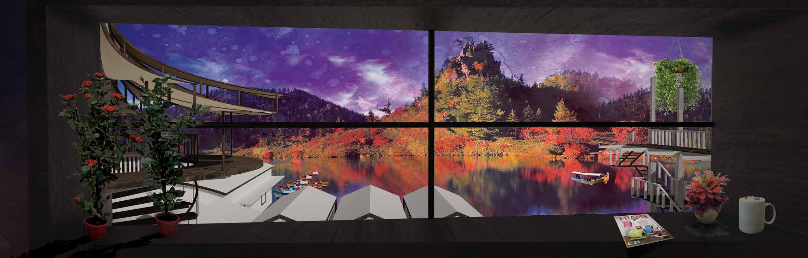

Ruay Ruengrung Community
Making room for everyday life.





Making room for everyday life.
A riverside community study across the river from Bang Kachao. The proposal considers shared routes, flood refuge and the everyday activities that give the neighbourhood its identity.
Improve the shared public routes while retaining the routines and character of an established riverside community.
Start with
everyday life.
Homes, shared spaces and the river.
The survey establishes what is already here.
A map of places and routines
The master map brings together housing types, infrastructure, religious spaces, local activities and access to the water.
A dense riverside fabric, held together by small shared places.
The research records the relationship between homes, lanes, waterfront activity and larger urban infrastructure. These existing conditions guide the proposal for improved routes and spaces within the community.
Homes at the water’s edge
Source site photograph.
The community along the river
Source site photograph.
The grain of the neighbourhood
Source overhead site photograph.
Explore five neighbourhood studies
Space beneath the highway
Contrasting housing edges
Religious and gathering space
Local and non-local activities
The pier as a shared place
A clear idea.
Spatial consequences.
Combine a flood-refuge beacon with incremental improvements to lanes, shared space and access to the pier.
Source community survey, phased proposals, street perspectives and site sections.
A viewing deck and flood-refuge beacon
Phase one / original detail, elevation, plan and perspective study.
Routes, thresholds
and shared ground.
Trace the proposal through
plans and the surveyed section.
Ground plan indicating entrances and steps.
Proposed pathways and new shared features.
Plan of existing structures and pathways.
Original surveyed community section / not to scale.
Building on
the shared route.
Original proposal boards connect
structure, circulation and the riverside edge.
Structure and occupation
An exploded study and sections describe the proposed framework above the existing fabric.
Connections and construction
The study combines the riverside perspective with connection details and plan information.
Routes above the water
The proposal explores suspended elements, a viewing deck and three path elevations.
Life between
the buildings.
Two perspectives describe
the proposed public realm.
The shared alley
A shaded passage through the community.
Steps as a place to gather
A small shared space along the pedestrian route.
A connected
community.
From the neighbourhood model
to the project’s speculative manifesto.
The proposal in its setting
A panoramic view brings the new routes and shared structures together.
An evening manifesto
Original speculative collage exploring the character of community life.
View the six complete presentation sheets
Project introduction
Full presentation sheet / original annotations retained.
Community survey
Full presentation sheet / original annotations retained.
Site photographs and section
Full presentation sheet / original annotations retained.
Phase one
Full presentation sheet / original annotations retained.
Phase two
Full presentation sheet / original annotations retained.
Project manifesto
Full presentation sheet / original annotations retained.
Academic community design study. Site photographs, analytical drawings and proposed design images are captioned separately. Original annotations and proportions are retained.